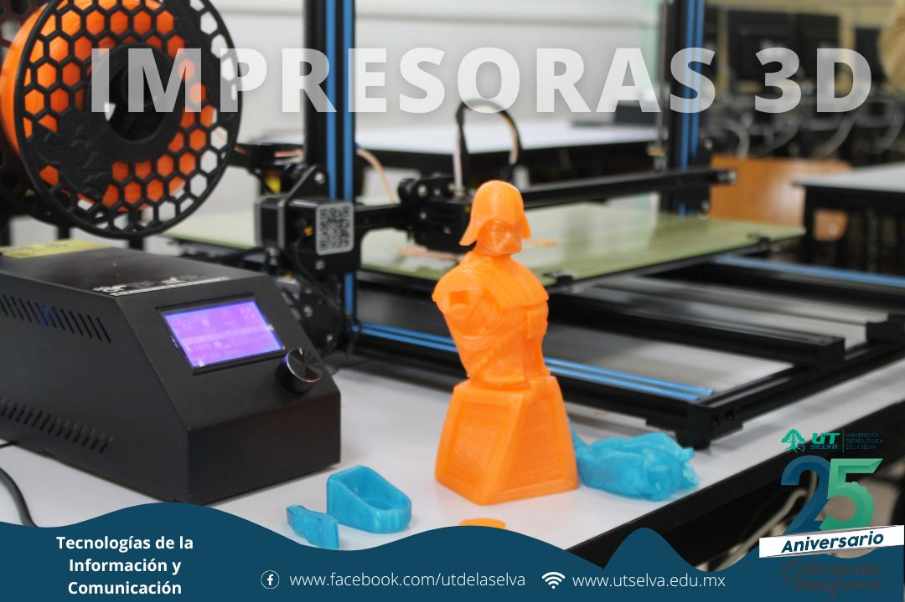

La animación por computadora es la técnica que consiste en crear imágenes en movimiento mediante el uso de una computadora. Hay animación bidimensional y animación tridimensional

Una impresora 3D es una máquina capaz de realizar réplicas de diseños en 3D, creando piezas o maquetas volumétricas a partir de un diseño hecho por ordenador. Surgen con la idea de convertir archivos de 2D en prototipos reales o 3D..
Una infraestructura de red se compone de todo el hardware de una red, como ordenadores, impresoras, servidores, switches, routers, cables y más. También incluye aplicaciones de software y servicios como sistemas operativos y cortafuegos.
El desarrollo de videojuegos es el proceso de creación de un videojuego, desde el concepto inicial hasta el videojuego en su versión final.